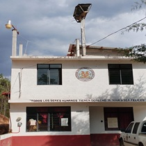

|
 |
| XINAÑU'U TU'UN JANA'A JAKANUU MINUKINDOO NU KAN'YO PÁGINA PRINCIPAL EN ESPAÑOL |  |
YUTENINU Yuteninu kui in ñuu luli de xtuna'a ja ku in ñuu indinuu.. Nasa ndeja'a nde nu kuiya xtuna'a jin jana'a: Ja ka'an tu tu'un jana'a ndeja'a nde nu kuiya kuu \(100\) a.C.. Ndaka ndi'i ja ku Ñuu kuiñi ku kanuu ja siki ja kakan'in Ñuu Kuiñi. Ja teku nu ñuu: Ñuu Yuteninu ka ne'e idee tu'un xina, ja kasa'a kuiya tan kuiya saani a kuu sa'an ndamayoo. Ja kuu tu'un jana'a ndade kuu ja kakote ñu'u nda xtuna'ade, ka kajitude, kataande ja kajinide a ka xte'en de kandakanide kuiya tan kuiya. Jakasa'a nu ñuu: Inuu jin inka andaa ñuu Ñu kuiñi ndaa ñayivi ñuu ka jini i a vaa nde xi'na taa ja kuu ja kasa'i ko'o, kisii, jiyo ñu'u jin nda yaa xtuna'a ja katede nda viko ñuu sani ja kuu andaa viko anuu jin nu kandanda'a nu veñu'u nu ñuu. |